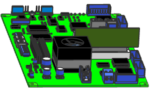

|
Tip |
Teams working on different sections of product development require different levels of details for the same design. With PCB Exchange, you can use filters to specify rules and options to keep only the entities you require. This filters can be set during import, update, or export operations. |
You have received an updated ECAD file and need to do an overall flow analysis with it. To control mesh size, you must omit components smaller than a certain dimension.
Additionally a supplier has changed a reference name and you will need to update this changes.
You must:
Open the original model and define a small component size threshold.
Modify the default PCB Exchange filter settings.
Modify the initialization files to replace a part specified at the ECAD file.
In this activity, you will learn how to:
Import ECAD models into NX.
Modify initialization *.ini files.
Use component name/number mapping.
Define and use filters.
